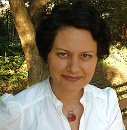

Maryam Modjaz (PI)
 The research questions my group and I are interested in address fore front problems in stellar death astrophysics through extensive and panchromatic observations of various types of massive stellar explosions, specifically Gamma-Ray Bursts and Supernovae, which are among the most powerful explosions in the universe, as well as a growing class of exotic transients, such as Superluminous SNe. With the goal of understanding their stellar progenitors and the explosion conditions that determine the fate of massive stars, we also study these stellar explosions' host environments and host galaxies, in particular the metallicities at the explosion sites, as a promising new tool for differentiating between various progenitor models. Astrophysics is entering the Golden Age of innovative time-domain surveys that stand to revolutionize our understanding of the transient sky. I'm part of the very successful Palomar Transient Factory (PTF, which finished as such in Dec 2012, and is now continuing as iPTF), as well as the large-scale Large Synoptic Survey Telescope (LSST) planned for around 2020. I am also member of of the SWIFT SN Team. Personal Homepage
Tyler Pritchard (Postdoc)
In the early 1990’s, transient science began a dramatic revolution with the confluence of robotic telescopes, technologically mature CCD’s, and cheapening computing power. These combined forces fueled an orders of magnitude increase in the number of astronomical transients observed, and helped revolutionize our understanding of the variable universe. Today, we are on the cusp of the culmination of these trends – with multi-messenger telescopes triggering wide field searches for EM counterparts, and these wide field telescopes capturing terabytes of data a night with potentially hundreds of newly discovered uncharacterized transients - the challenge is becoming finding the ‘interesting’ transient and getting the right telescopes, and the right observations, on them. My primary research interests revolve around using these burgeoning multi-wavelength observations of astronomical transients to understand the progenitors, and oftentimes-extreme physics, that drive them. Current and previous research has included: Fast Evolving Transients and progenitors of stripped-envelope supernovae, Fast, or early, transients & multi-messenger astrophysics with the Deeper Wider Faster (DWF) program, High-Redshift Superluminous Supernovae and hosts with Survey Using DECam for Superluminous Supernovae (SUDSS) program, and UV properties of core-collapse supernovae with the NASA Swift satellite. Personal Homepage
Marc Williamson (PhD Student)
I graduated from Stanford University with a B.S. with Honors in Physics and a minor in Computer Science with a focus on Machine Learning. My undergraduate research was conducted with Professor Risa Wechsler studying large scale structure formation using dark matter N-body simulations. After Stanford, I spent a year working at ETH Zurich as an Assistant Researcher to Professor Alexandre Refregier. In Zurich I worked on developing a pipeline for image analysis for the Dark Energy Survey. I began my doctoral studies at New York University in 2017 working with Professor Maryam Modjaz studying the explosions of massive stars. I currently work on developing new frameworks for both theoretical modeling and classification of stripped-envelope core collapse supernova spectra. My interests include SN progenitor simulations, radiative transfer simulations, machine learning based emulators and open-source software. Personal Homepage